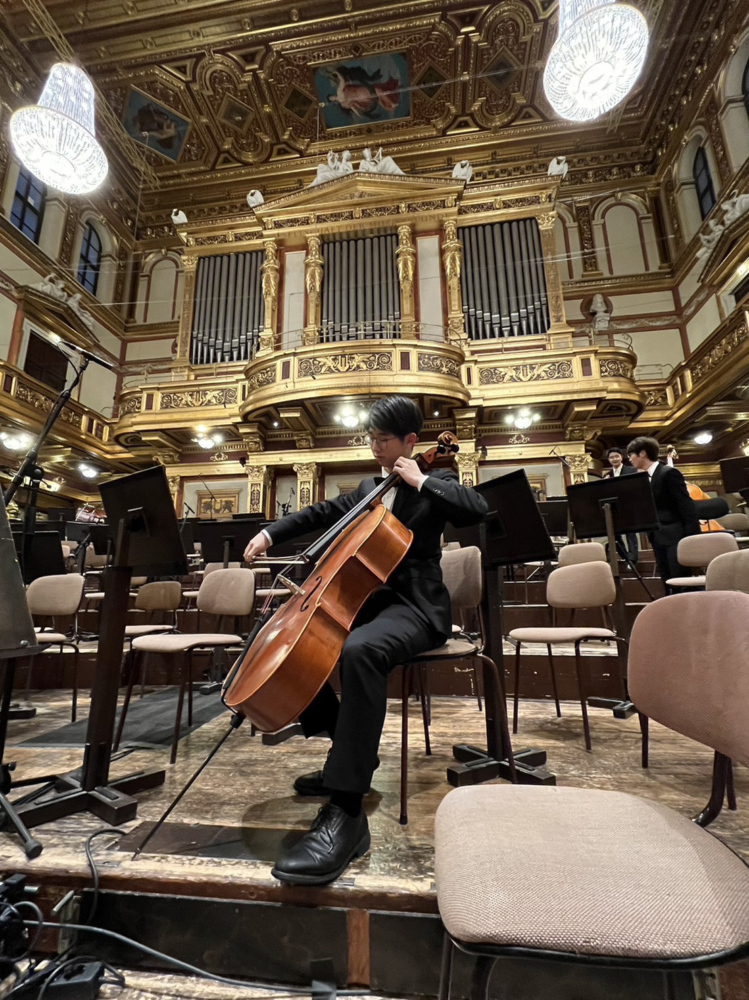
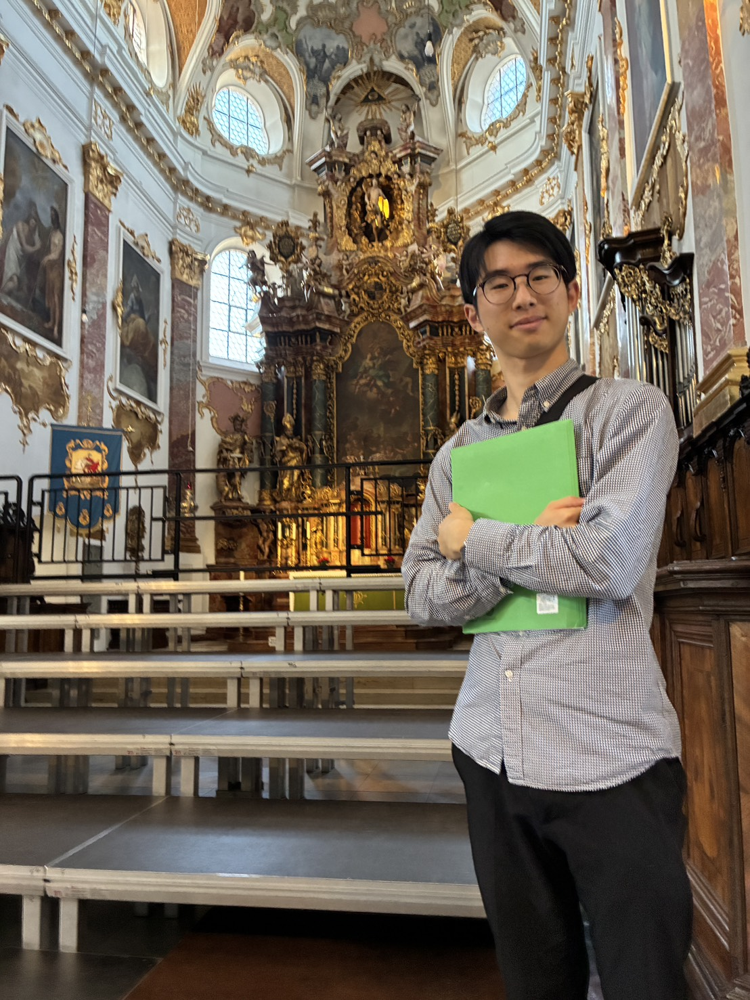
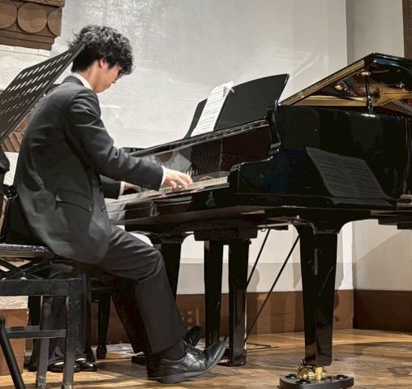

2026.09
学生奨励賞（Best New Direction部門）
「人間演奏音楽と打ち込み音楽における楽譜特徴量の差異の分析」が，
第147回MUS研究発表会で学生奨励賞を受賞しました．

音楽情報処理を専門としています．
奏者と楽器の存在を前提としない音楽のための
理論構築を目指しています．
民族音楽の記譜法自動設計，微分音音楽などにも
興味があります．
Awards
2026.09
「人間演奏音楽と打ち込み音楽における楽譜特徴量の差異の分析」が，
第147回MUS研究発表会で学生奨励賞を受賞しました．
Publications
人間演奏音楽と打ち込み音楽における楽譜特徴量の差異の分析学生奨励賞（Best New Direction部門）
情報処理学会 音楽情報科学研究会, 2026年8月.
@inproceedings{fukao26mus_score-feature-analysis,
author = {貫太 深尾 and 慎之介 高道},
title = {人間演奏音楽と打ち込み音楽における楽譜特徴量の差異の分析},
booktitle = {情報処理学会 音楽情報科学研究会},
year = {2026}, month = aug
}人間-AI斉唱における合成歌声の呼吸パラメータの歌唱者間リアルタイム同期
情報処理学会 音楽情報科学研究会, 2026年3月.
@inproceedings{fukao26mus_realtime-sync-breathing,
author = {貫太 深尾 and 啓史 三井 and 晶子 小野 and 祟寛 上原 and 慎之介 高道},
title = {人間-AI斉唱における合成歌声の呼吸パラメータの歌唱者間リアルタイム同期},
booktitle = {情報処理学会 音楽情報科学研究会},
year = {2026}, month = mar
}大規模言語モデルと自己修正に基づく歌唱可能な歌詞への Phonemic Translation
— 複数LLM・複数時代の楽曲による分析 —
情報処理学会 音楽情報科学研究会, 2026年8月.
LLMの日本語音象徴理解を測るベンチマーク構築にむけた検討
言語処理学会 若手支援事業, 2026年8月.
大規模言語モデルと自己修正に基づく歌唱可能な歌詞への phonemic translation
情報処理学会 音楽情報科学研究会, 2026年3月.
人間ーAI斉唱において合成歌声特徴量の変調が斉唱らしさにもたらす効果
情報処理学会 音楽情報科学研究会, 2026年3月.
Development
2026年6月から株式会社CoeFontでResearcherとして，
ネパール語や中国語方言などを対象とした音声合成に従事しています．
activities

チェロパートに所属．
広報チーフとして，業務の体系化と管理体制の再編，
連携強化に取り組みました．

トップテノール3年，セカンドテノール1年所属．
チケット係チーフ，六連理事長，発声担当チーフを歴任し，
定期演奏会のチケット電子化などに従事しました．

ピアノとチェロを担当しています．